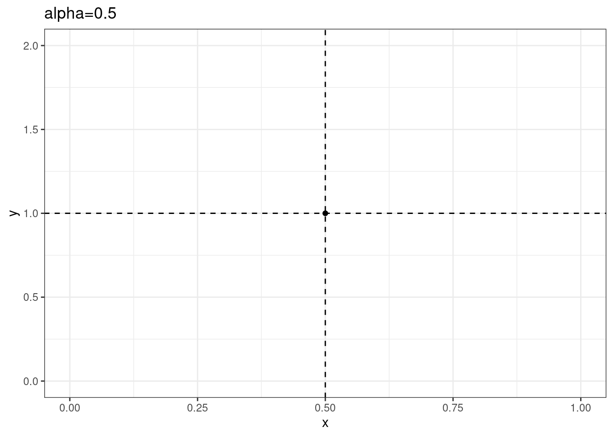

Models for two populations
Lotka-Volterra predator-prey model
We have a prey who would grow exponentially when the predator is absent, and a predator that would decline exponentially when the prey is absent. The two species interact, thus allowing for their coexistence:
\[ \begin{cases} \dfrac{dX}{d\tau} = \rho X - \alpha X Y = X(\rho - \alpha Y)\\ \dfrac{dY}{d\tau} = -\delta Y + \beta X Y = Y(-\delta + \beta X) \end{cases} \]
where all parameters are positive. There are two equilibria: \((X, Y) = (0, 0)\) and \((X, Y) = \left(\frac{\delta}{\beta}, \frac{\rho}{\alpha} \right)\).
Nondimensionalization To simplify the equation (but maintain all its important features), we can define two new variables and a new time scale:
\[ x = c_1 X \quad y = c_2 Y \quad t = c_3 \tau \]
Using the new variables, we write:
\[ \begin{cases} \dfrac{c_1}{c_3}\dfrac{dx}{dt} = c_1 x(\rho - \alpha c_2 y)\\ \dfrac{c_2}{c_3}\dfrac{dy}{dt} = c_2 y(-\delta + \beta c_1 x) \end{cases} \] and thus
\[ \begin{cases} \dfrac{dx}{dt} = x(c_3 \rho - \alpha c_2 c_3 y)\\ \dfrac{dy}{dt} = y(-c_3 \delta + \beta c_1 c_3 x) \end{cases} \]
It is convenient to take \(c_3 = 1/\rho\), \(c_2 = \rho / \alpha\), and \(c_1 = \rho / \beta\), thus simplifying the system to:
\[ \begin{cases} \dfrac{dx}{dt} = x(1 - y)\\ \dfrac{dy}{dt} = y(-\frac{\delta}{\rho} + x) = y(-\alpha + x) \end{cases} \]
We can therefore analyze the case in which we have only a single free parameter, \(\alpha = \rho / \delta > 0\). The equilibria are \((x,y) = (0,0)\) and \((x, y) = (\alpha, 1)\).
Isoclines of net zero growth. Clearly, the first equation is zero when either the prey is absent, or the predator is at \(y = 1\); the second equation is zero when either the predator is absent or the prey is at \(x = \alpha\); we can draw the two lines in a plane where we have \(x\) on the x-axis and \(y\) on the y-axis. The feasible (positive) equilibrium will be at the intersection of the two lines:
Direction of trajectories
We have four quadrants surrounding the equilibrium:
\(x < \alpha, y < 1\): in the bottom-left corner, we have \(dx/dt > 0\) and \(dy/dt < 0\); accordingly, the prey will grow and the predator decline.
\(x > \alpha, y < 1\): in the bottom-right corner, we have \(dx/dt > 0\) and \(dy/dt > 0\); accordingly, both populations will grow
\(x > \alpha, y > 1\): in the top-right corner, we have \(dx/dt < 0\) and \(dy/dt > 0\); the prey will decline, the predator grow
\(x < \alpha, y > 1\): in the top-left corner, we have \(dx/dt < 0\) and \(dy/dt < 0\); both populations will decline
We can show these directions visually, by computing \((dx/dt, dy/dt)\) at different values of \((x, y)\):

Classic papers
Vito Volterra (1926) Fluctuations in the Abundance of a Species Considered Mathematically Nature 118 : 558-60
Gause, G.F. 1934. Experimental Analysis of Vito Volterra’S Mathematical Theory of the Struggle for Existence. Science 79:16-17
Chesson, P. 2000. Mechanisms of Maintenance of Species Diversity. Annual Review of Ecology and Systematics 31:343-366
May R.M. 1972. Will a large complex system be stable? Nature 238:413-414
Anderson, R.M; May, R.M. 1978. Regulation and Stability of Host-Parasite Population Interactions. Journal of Animal Ecology 47:219-247
May R.M. & Anderson, R.M. 1979. Population biology of infectious diseases: Part II. Nature 280:455-461
McCann, K.S. 2000. The diversity - stability debate. Nature 405:228-233